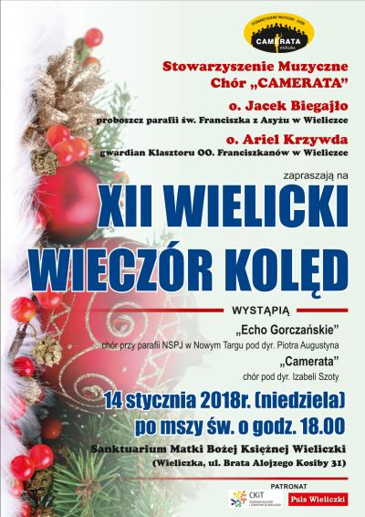
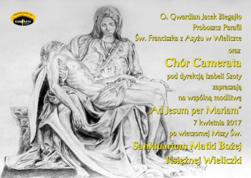
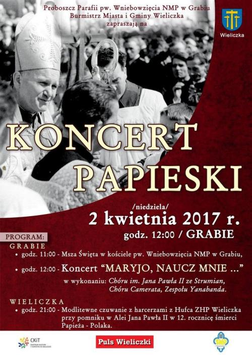
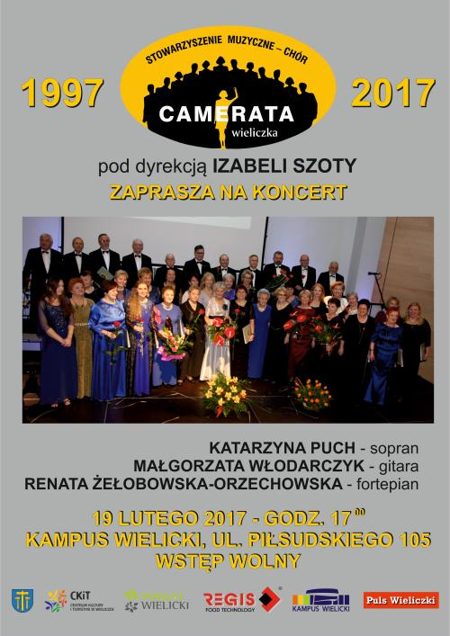
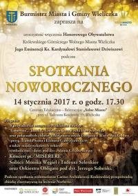
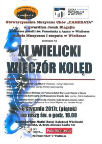

Aktualności archiwalne
Rok 2017
31-12-2017
Zapraszamy na Koncert
czytaj dalej ...
2017-12-31
Szczęśliwego Nowego Roku życzy Chór Camerata2017-12-15
Spotkanie świąteczne. czytaj dalej ...2017-11-11
Koncert z okazji 11 listopada w Centrum Edukacyjno- Rekreacyjnym „Solne Miasto”. czytaj dalej ...2017-10-21
Dzisiaj śpiewamy na ślubie. czytaj dalej ...2017-10-01
Uniwersytet Trzeciego Wieku „Aktywne Życie” oraz Burmistrz Gminy i Miasta Miechów serdecznie zapraszają na inaugurację roku akademickiego 2017/2018. czytaj dalej ...2017-09-22
Oprawa Mszy Świętej ku czci Św. Rity w kościele Św. Katarzyny Aleksandryjskiej w Krakowie czytaj dalej ...2017-06-04
Ogród Botaniczny UJ Kraków, ul. Kopernika 27 zaprasza na Święto Ogrodów z chórem Camerata. czytaj dalej ...2017-04-28 do 2017-05-03
Wyjazd Cameraty na majówkę do Holandii. czytaj dalej ...2017-04-07
Piękny koncert w Sanktuarium Matki Bożej Łaskawej Księżnej Wieliczki. czytaj dalej ...2017-04-03

czytaj dalej ...
2017-04-02
Koncert Papieski pt.: "Maryjo, naucz mnie ..."
czytaj dalej ...
2017-03-11
Początek marca to czas gdy świętują wszystkie kobiety. 8 marca – Dzień Kobiet tradycyjnie, od kilkudziesięciu lat uroczyście obchodzony jest także w Gminie Koszyce. czytaj dalej ...2017-02-19
Dzisiaj kolejny koncert z cyklu 20 - lecie Cameraty. czytaj dalej ...2017-01-30
W poniedziałek 30 stycznia spotykamy się o godz. 17.00 w Kaplicy Włoskiej Bazyliki OO. Franciszkanów przy ul. Franciszkańskiej 2 w Krakowie. czytaj dalej ...2017-01-29
Oprawa Mszy Św. w intencji chóru Camerata w 20-lecie działalności w kościele Św. Klemensa. czytaj dalej ...2017-01-23

czytaj dalej ...
2017-01-15
Jubileusz 20-lecia to znakomita okazja do wspomnień, dlatego Stowarzyszenie Muzyczne – Chór Camerata, działający pod patronatem Centrum Kultury i Turystyki w Wieliczce, zaprosił w niedzielne popołudnie 15 stycznia 2017 r. na niezwykłą podróż po muzyce filmowej, ze swoją historią w tle. czytaj dalej ...2017-01-14
14 stycznia 2017 roku miało miejsce wyjątkowe wydarzenie.Podczas dorocznego Koncertu Noworocznego, organizowanego przez Burmistrza Miasta i Gminy Wieliczka, wręczono Honorowe Obywatelstwo Królewskiego Górniczego Wolnego Miasta Wieliczka Jego Eminencji Ks. Kardynałowi Stanisławowi Dziwiszowi.

czytaj dalej ...
2017-01-06
6 stycznia, w Święto Trzech Króli, w Sanktuarium Matki Bożej Księżnej Wieliczki miał miejsce XI Wielicki Wieczór Kolęd.
czytaj dalej ...

© Stowarzyszenie Muzyczne Chór Camerata Wieliczka
Projekt i wykonanie:  Prowadzenie strony: Małgorzata Wysocka-Cebula
Prowadzenie strony: Małgorzata Wysocka-Cebula